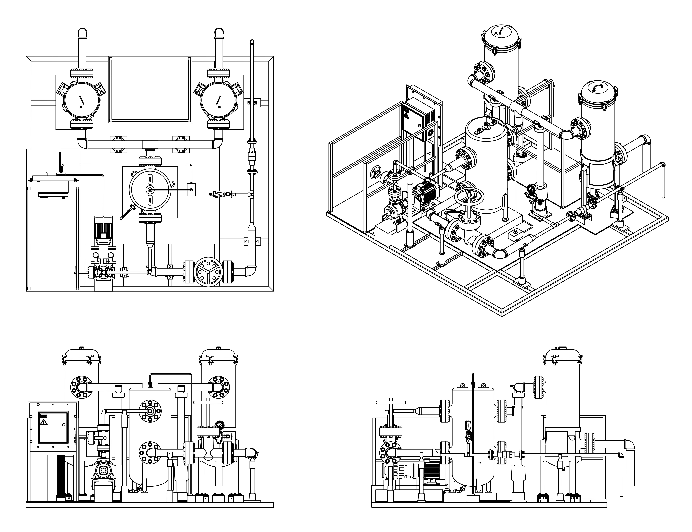

This project involves the design of a modular filtration skid, focusing on piping layout, flow routing, and component arrangement. The system integrates process functionality with considerations such as accessibility, structural support, and material estimation.
Conceptual Layout and Process Flow
The conceptual floor plan illustrates the initial spatial arrangement of major components within the skid, focusing on placement, routing feasibility, and accessibility for operation and maintenance. Adequate spacing between equipment was considered to allow service access, inspection, and ease of installation.
The process flow diagram complements this by defining the sequence of operation from inlet through pumping, filtration, and distribution, providing a clear representation of system functionality and flow direction.
System Layout Development
Following the conceptual stage, the system layout was refined to develop a structured arrangement of components, ensuring efficient use of space, proper routing, and accessibility for operation and maintenance. Orthographic and isometric views were used to validate spatial relationships and overall integration.

Component Design and Standard Integration
The system incorporates both custom-designed components and standard parts. Valves and piping elements were selected from Inventor Content Center to ensure compatibility with commonly used industrial components. Major equipment such as the filtration unit, storage tanks, pump configuration, and supporting skid structure were modeled to meet system requirements and spatial constraints.
Custom modeling of tanks, filter unit, pump setup, control panel, pipe support and skid frame
Use of Inventor Content Center for standard valves and piping
Consideration of component spacing and routing to allow service access and maintenance
Consistent use of Class 300 flanges for NPS 1 and NPS 3 piping
Definition of sealing surfaces, bore, and bolt pattern in sectional view
Piping and flange connections were designed following ASME B16.5 Class 300 standards, with NPS 1 and NPS 3 components used consistently throughout the system. Flange dimensions were interpreted from standard tables and translated into a detailed 2D sectional drawing to clearly define mating geometry, sealing surfaces, and bolt arrangement. The sectional drawing shown was created to represent these features based on standard dimensions, with the reference table provided alongside for validation.
A bill of materials was developed to document the major components of the system and provide an initial cost estimate. The breakdown includes primary equipment, piping elements, and fittings, supporting evaluation of material requirements and overall project feasibility.
This video presents a walkthrough of the modular filtration skid, highlighting component arrangement, piping layout, and overall system integration within the structure.